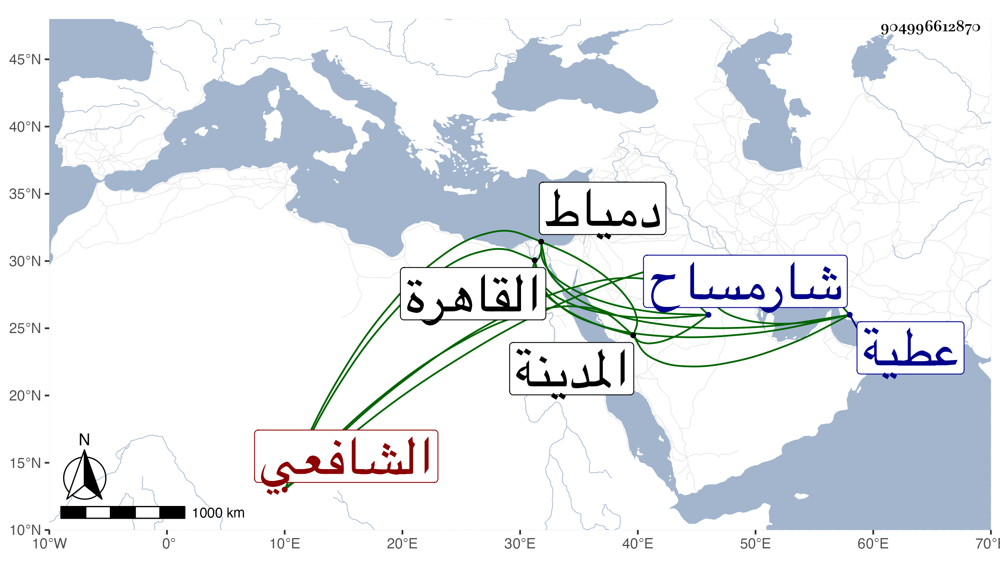

0902Sakhawi.DawLamic.ITO20230111-ara1.EIS1600.904996612870
Biography ID: 904996612870
1215
صدقة بن علي بن محمد فتح الدين بن النور أبي الحسن بن الشمس الشارمساحي الشافعي ويعرف بابن نور الدين . حفظ القرآن ، وقدم القاهرة فأقام بزاوية البرهان الابناسي حتى حفظ التنبيه وعرضه في سنة ثلاث وتسعين على البرهان صاحبها وبدر القويسني والبرشنسي والعراقي وابن الملقن وأجازوا له ومما كتب له المجد البرماوي : سار في اسماعه سير البرق أو أسرع وأفصح بها أفصح من أفصح فصيح مصقع مطرقا حياء لا رهبا لم يكب فيا عجبا كاد أن يناسب لقبه مسماه ويكشف معناه أسماه وأسماه ، بل سمع عليه صحيح مسلم بقراءته له في المدينة النبوية على العفيف عبد الله بن محمد المطري بسنده وقبل ذلك بيسير سمع عليه بعض البخاري وختمه بالآثار في رمضان سنة اثنتين وتسعين ولازمه في الاشتغال بالفقه ورجع فأقام بقرية عطية بالقرب من دمياط . وولي قضاء شارمساح وعملها إلى شرباص بعد الثلاثين متكرها ثم أعرض عنه واستمر حتى مات قبل الخمسين ودفن بقرية عطية وكان له مشهد حافل لأعتقادهم فيه ووجاهته في ذلك فقد كان ورعا دينا .
